Probability Distribution Functions¶
The module randist offer a set of functions that mirrors those available from the module rnd.
Generally, for each kind of distribution a few functions are available to calculate the probability density, the cumulative probability and its inverse.
Continuous random number distributions are defined by a probability density function, p(x), such that the probability of x occurring in the infinitesimal range x to x+dx is p dx.
The cumulative distribution function for the lower tail P(x) is defined by the integral,
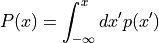
and gives the probability of a variate taking a value less than x.
The cumulative distribution function for the upper tail Q(x) is defined by the integral,
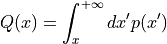
and gives the probability of a variate taking a value greater than x.
The upper and lower cumulative distribution functions are related by 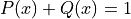 and satisfy 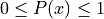, 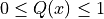.
The inverse cumulative distributions, 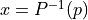 and 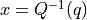 give the values of x which correspond to a specific value of p or q. They can be used to find confidence limits from probability values.
For discrete distributions the probability of sampling the integer value k is given by 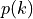, where 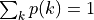. The cumulative distribution for the lower tail P(k) of a discrete distribution is defined as,
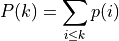
where the sum is over the allowed range of the distribution less than or equal to k.
The cumulative distribution for the upper tail of a discrete distribution Q(k) is defined as
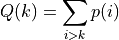
giving the sum of probabilities for all values greater than k. These two definitions satisfy the identity 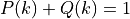.
If the range of the distribution is 1 to n inclusive then 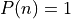, 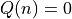 while 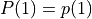, 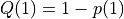.
Naming Conventions¶
The probability functions are named following an uniform naming convention.
The probability density function end with the suffix _pdf.
The cumulative functions 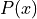 and 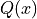 ends with the suffix _P and _Q respectively.
The inverse cumulative functions 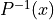 and 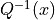 ends with the suffix _Pinv and _Qinv respectively.
Functions Index¶
We present here the list of the available probability functions.
Note
Actually GSL Shell implements all the functions provided by the GSL library but some of them are not listed here. Please consult the GSL reference manual if you need a complete list of all the distributions available.
- randist.gaussian_pdf(x, sigma)¶
- randist.gaussian_P(x, sigma)¶
- randist.gaussian_Q(x, sigma)¶
- randist.gaussian_Pinv(x, sigma)¶
- randist.gaussian_Qinv(x, sigma)¶
- randist.exponential_pdf(x, mu)¶
- randist.exponential_P(x, mu)¶
- randist.exponential_Q(x, mu)¶
- randist.exponential_Pinv(x, mu)¶
- randist.exponential_Qinv(x, mu)¶
- randist.chisq_pdf(x, nu)¶
- randist.chisq_P(x, nu)¶
- randist.chisq_Q(x, nu)¶
- randist.chisq_Pinv(x, nu)¶
- randist.chisq_Qinv(x, nu)¶
- randist.laplace_pdf(x, a)¶
- randist.laplace_P(x, a)¶
- randist.laplace_Q(x, a)¶
- randist.laplace_Pinv(x, a)¶
- randist.laplace_Qinv(x, a)¶
See Laplace Distribution.
- randist.tdist_pdf(x, nu)¶
- randist.tdist_P(x, nu)¶
- randist.tdist_Q(x, nu)¶
- randist.tdist_Pinv(x, nu)¶
- randist.tdist_Qinv(x, nu)¶
See t- Distribution.
- randist.cauchy_pdf(x, a)¶
- randist.cauchy_P(x, a)¶
- randist.cauchy_Q(x, a)¶
- randist.cauchy_Pinv(x, a)¶
- randist.cauchy_Qinv(x, a)¶
See Cauchy Distribution.
- randist.rayleigh_pdf(x, sigma)¶
- randist.rayleigh_P(x, sigma)¶
- randist.rayleigh_Q(x, sigma)¶
- randist.rayleigh_Pinv(x, sigma)¶
- randist.rayleigh_Qinv(x, sigma)¶
- randist.fdist_pdf(x, nu1, nu2)¶
- randist.fdist_P(x, nu1, nu2)¶
- randist.fdist_Q(x, nu1, nu2)¶
- randist.fdist_Pinv(x, nu1, nu2)¶
- randist.fdist_Qinv(x, nu1, nu2)¶
See F- Distribution.
- randist.gamma_pdf(x, a, b)¶
- randist.gamma_P(x, a, b)¶
- randist.gamma_Q(x, a, b)¶
- randist.gamma_Pinv(x, a, b)¶
- randist.gamma_Qinv(x, a, b)¶
See Gamma Distribution.
- randist.beta_pdf(x, a, b)¶
- randist.beta_P(x, a, b)¶
- randist.beta_Q(x, a, b)¶
- randist.beta_Pinv(x, a, b)¶
- randist.beta_Qinv(x, a, b)¶
See Beta Distribution.
- randist.gaussian_tail_pdf(x, a, sigma)¶
- randist.gaussian_tail_P(x, a, sigma)¶
- randist.gaussian_tail_Q(x, a, sigma)¶
- randist.gaussian_tail_Pinv(x, a, sigma)¶
- randist.gaussian_tail_Qinv(x, a, sigma)¶
- randist.exppow_pdf(x, a, b)¶
- randist.exppow_P(x, a, b)¶
- randist.exppow_Q(x, a, b)¶
- randist.exppow_Pinv(x, a, b)¶
- randist.exppow_Qinv(x, a, b)¶
- randist.lognormal_pdf(x, zeta, sigma)¶
- randist.lognormal_P(x, zeta, sigma)¶
- randist.lognormal_Q(x, zeta, sigma)¶
- randist.lognormal_Pinv(x, zeta, sigma)¶
- randist.lognormal_Qinv(x, zeta, sigma)¶
- randist.poisson_pdf(x, mu)¶
- randist.poisson_P(x, mu)¶
- randist.poisson_Q(x, mu)¶
See Poisson Distribution.